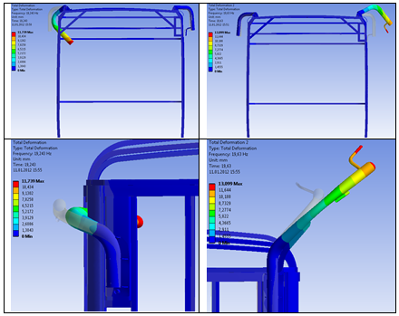

Nur Hoþver, Veysel Çataltepe, Akýn Çevik, Özgür Uyar
Anadolu ISUZU Otomotiv San. ve Tic. A.Þ.
Aralýk 2011, Kocaeli
Not: Bu makale ilk defa Mayýs 2012'de TurkCADCAM.net portalý üzerinden yayýnlanmaya baþlamýþtýr.
Özet
Anadolu ISUZU tarafýndan geliþtirilen bir toplu taþýma otobüsünün dýþ aynalarýnýn titreþim performansýnýn, sonlu elemanlar analizleri ve titreþim testleri yardýmýyla geliþtirilmesi amaçlanmýþtýr.
Anahtar kelimeler: Modal Analiz, Otobüs Dýþ Aynalarý, Titreþim Testleri
Giriþ
Dýþ aynalar, otobüs þoförleri için emniyetli sürüþ ve konfor açýsýndan çok önemli komponentlerdir. Ayna ve baðlantýlarýnýn fonksiyonlarý arasýnda; kararlý, net ve yüksek kaliteli görüntü oluþturmak, görüntüyü sürücüye aktarmak, emniyetli sürüþ için gerekli görüntüleri göstermek, kör nokta oluþturmamak, düþük ýþýkta dahi iyi görüntü oluþturmak þeklinde sýralanabilir. Ayný zamanda aynalarýn montajý da fonksiyonel olmalý, ayna yeri ve þoföre göre pozisyonu doðru olmalý, yüklemeye maruz kaldýðýnda oryantasyonunu koruyabilmelidir.
Otobüs, midibüs gibi ticari araçlarda dýþ ayna titreþimleri yol ve aerodinamik etkenler nedeniyle her zaman incelenmesi gereken bir konudur. Ayna kollarýnýn ve baðlantý elemanlarýnýn elastikliði, ayna baþlarýnýn rijitliði, ayna ve çevresinin elastikliði titreþime etki eden bazý etmenlerdir. Bu konuda otobüs üretici firmalarýnýn Ar-Ge çalýþanlarý, ayna kollarý ile ilgili farklý tasarým çalýþmalarýný, optimizasyon çalýþmalarý, sonlu elemanlar analizleri ve testler ile deðerlendirerek ürün geliþtirme aþamalarýný tamamlama.
Ayna görüþ alanlarý minimum gereksinimlerine yönelik þartnamelerde (2003/97/EEC) belirtildiði üzere, sürücü tarafýndaki ve yolcu tarafýndaki dýþ arka görüþ aynalarý için görüþ alaný, sürücünün görüþ alaný göz hizasýndan geriye doðru 30 m mesafeden baþlayarak yatayda en az 5 m geniþliðinde, 4 m mesafeden baþlayarak yatayda en az 1m geniþliðinde olmalýdýr.
Þekil 1. 2003/97/EEC þartnamesinde belirtilen ayna görüþ alaný
2003/97/EEC þartnamesinde belirtilen özellikleri ve yukarýda belirtilen diðer fonksiyonlarý karþýlamak, ayný zamanda aracýn kayar gösterge paneline engel oluþturmamak için aracýn tavanýndan baðlantýlý bir dizayn oluþturularak önceki tasarýmlardan farklý bir tasarýmla yola çýkýlmýþ farklý bir dýþ ayna tasarýmý deðerlendirilmiþtir. Bu dizayn, regülasyonlarda belirtilen özellikleri karþýlamak için (yükseklik vs.) beraberinde titreþim sorunlarýný getirmiþtir.
Þekil 2. Kayar Yazý Paneli ve Ayna Baðlantýsý
Fabrika içerisinde yapýlan titreþim testleri ve subjektif deðerlendirmelerde, araç seyir halinde ve rölanti durumunda iken ayna kollarýnýn titreþim performansýnýn iyileþtirilmesi gerekliliði gözlemlenmiþtir.
Güvenlik þartnamelerini saðlayacak, sürücü beklentilerini karþýlayacak bir dýþ ayna tasarýmý oluþturmak ve titreþim sorunlarýný gidermek için sonlu elemanlar analizleri gerçekleþtirerek ve test edilerek aynalarýn titreþim frekanslarý elde edilmiþ ve gerekli dizayn çalýþmalarý yapýlmýþtýr.
Sonlu elemanlar modeli ve sýnýr þartlarý
Modelde rijitlik saðlayan profiller ve solid parçalar kullanýlarak, sadece otobüs modelinin ön bölgesi (ön kapý bitiþinden itibaren) modellenmiþtir. Saclar, frp parçalar ve camlar modele eklenmemiþtir. Sýnýr þartý olarak, ön kapý arkasýndan itibaren model sabitlenmiþtir. Yan aynalarýn camý ve plastik aksamý modele eklenmeyip, aðýrlýk (3.5 kg) olarak hesaba katýlmýþtýr.
Sonlu elemanlar modellemesi ve analizi Ansys Workbench 13.0 kullanýlarak gerçekleþtirilmiþtir.
Þekil 3. Sonlu Elemanlar Modeli
Ulaþýlmasý gereken frekans deðerleri, “bir parçanýn doðal frekanslarýný motor ve diðer sistem modlarýndan uzak tutma” yaklaþýmý ile belirlenmiþtir.
Yoldan araca iletilen, araç gövdesinde etkin olan tahriklerin büyük çoðunluðunun 0-20 Hz arasýnda olduðu varsayýlmýþ, ayna sistemi doðal frekansýnýn 20 Hz üzerine çýkarýlmasý hedeflenmiþtir.
Baz model
Baz ayna modeli form verilmiþ bir boru ve bu boruyu gövdeye baðlayan döküm baðlantý parçasýndan oluþmaktadýr.
|
|
Þekil 4. Sol ve Sað Ayna Parçalarý ve Baðlantýsý |
Baz modelde ayna titreþim frekanslarýna bakýldýðýnda, birinci mod sað aynada yanal eksende eðilme þeklinde 13.2 Hz, ikinci mod sol aynada yanal eksende eðilme þeklinde 13.4 Hz civarýnda çýkmaktadýr. Bunlarý takip eden frekanslarda da sað aynada araç ekseninde eðilme þeklinde 15.6 Hz ve sol aynada araç ekseninde eðilme þeklinde 16Hz çýkmaktadýr. Literatür araþtýrmalarýna göre bu deðerler (0-20Hz arasý), yoldan araca iletilen uyarýlarýn frekanslarý olduðu bilinmektedir.
Þekil 5. Baz Model Analiz Sonuçlarý
Baz modelde sol ayna üzerinde yapýlan test sonuçlarýna göre frekans deðerleri yanal yönde 11 Hz ve araç yönünde 14.5 Hz çýkmýþtýr.
Tablo 1. Baz Model Sol Ayna Doðal Frekanslarýnýn Karþýlaþtýrýlmasý
| |
Test |
Analiz |
Sol Ayna |
11 Hz |
13,4 Hz |
Þekil 6. Sol Ayna Test Sonuçlarý
Test sonuçlarýndan elde edilen frekans deðerleri ile sanal analizler ile hesaplanan frekans deðerlerinin bir miktar farklý olduðu görülmüþtür. Bu farkýn analizdeki modelleme gereði, ön-yan camlarýn olmayýþý, kontakt rijitliði gibi nedenlerden kaynaklandýðý tahmin edilmektedir.
Tasarým geliþtirme aþamalarý
Aynalarýn doðal frekansýný hedeflenen deðere ötelemek için birçok çalýþma yapýlmýþ titreþim deðerlerini hedeflenen deðere ulaþtýrmaya çalýþýlmýþtýr. Ayna kollarýnýn titreþim frekanslarýný ötelemek için; ayna baðlantý kollarýnýn montajý, baðlantý kolu-araç gövde baðlantýlarýnýn montaj etkisi, baðlantý kolu-araç gövde esnek (kauçuk) parçalarýn etkisi, ayna-kol montaj deðiþikliði, ayna koluna köpük doldurulmasý gibi yöntemler denenmiþtir.
Sol ayna üzerinde yapýlan bazý deðiþiklikler Þekil 7 ’de verilmiþtir.
Kauçuk malzemelerle desteklemek
|
Döküm Baðlantý parçasýný deðiþtirmek / Boru içine lama yerleþtirmek |
Alüminyum destek profiller yerleþtirmek |
ikinci bir eksenden sabitlemek |
Þekil 7. Sol Ayna üzerinde yapýlan bazý çalýþmalar
Sol ayna üzerinde yapýlan, maliyeti daha ucuz olan tasarýmlar (baðlantýyý kauçuk ile desteklemek, boru içine lama kaynatmak vs..) ile problem giderilememiþ, ayna kolunun karkas ile baðlantýsýný gerçekleþtiren parça deðiþtirilip borunun ikinci bir eksenden sabitleyen parça tasarýmý ile hedeflenen deðere ulaþýlmýþtýr.
Sað ayna kollarýnýn titreþim frekanslarýný ötelemek için yapýlan çalýþmalar aþaðýda verilmiþtir:
Alüminyum destek profiller yerleþtirmek / Döküm Baðlantý parçasýný deðiþtirmek |
Baðlantý parçasýný uzatmak |
Boru formunu açýlý yapmak |
Þekil 8. Sað Ayna üzerinde yapýlan bazý çalýþmalar
Sað ayna için de maliyeti ucuz kabul edilen yöntemler çözüm getirmemiþ karkas baðlantý parçasý deðiþtirilmiþ ve en etkili çözüm olan boru formunun titreþime fazla izin vermeyecek þekilde açýlý tasarlanmasý ve boru üzerine destek elemanlar kaynatýlmasý çözüm olmuþtur.
Final tasarým ve analiz sonuçlarý
Bu çalýþmalardan sonra en uygun tasarým seçilerek fabrika içerisinde titreþim testleri gerçekleþtirilmiþtir. Bu testlerde ve subjektif deðerlendirmelerde, araç seyir halinde ve rölantide iken aynalarýn titreþiminin kabul edilebilir seviyelerde olduðu gözlemlenmiþtir.
Son tasarlanan sað ve sol aynalarýn üstten görünüþü Þekil 9’da gösterilmiþtir.
Þekil 9 . Final Model
Sað ve sol aynalarýn final modelleri üzerinde normal yol koþullarýnda ve çekiç testlerinde titreþim datalarý toplanmýþ ve ortaya çýkan frekans deðerleri analiz sonuçlarý ile mukayese edilmiþtir. Þekil 10, 11, 12 ve 13’de sað ve sol ayna komplesi üzerinde toplanan titreþim datalarýna ait power spektrum daðýlýmlarý görülmektedir.
Þekil 10. Sol Ayna Frekanslarý (Yol Testleri)
Þekil 11. Sað Ayna Frekanslarý (Yol Testleri)
Þekil 12. Sol Ayna Frekanslarý (Çekiç Testleri) |
Þekil 13. Sað Ayna Frekanslarý (Çekiç Testleri) |
Sað ve Sol aynalarýn final modelleri üzerinde yapýlan test sonuçlarý ve sonlu elemanlar analizi sonuçlarýnýn karþýlaþtýrmasý Tablo 2’de görülmektedir. Sonuçlara göre test ve sanal analiz sonuçlarý arasýnda baz model sonuçlarýndaki gibi sanal analizlerde yapýlan kabuller ve modellemeden kaynaklandýðý tahmin edilen farklýlýklar gözlemlenmiþtir.
Tablo 2. Final Modelde Aynalarýn Doðal Frekanslarýnýn Karþýlaþtýrýlmasý
| |
Test |
Analiz |
Sol Ayna |
18 Hz |
19,2 Hz |
Sað Ayna |
17 Hz |
19,6 Hz |
Þekil 14 ’de final tasarým sað ve sol ayna için deformasyon þekli ve frekans deðerleri verilmiþtir.

Þekil 14 . Geliþtirilmiþ Model Analiz Sonuçlarý |
Sonuçlar
Bu çalýþmada Anadolu ISUZU tarafýndan geliþtirilen bir toplu taþýma aracýnda subjektif olarak tespit edilen ayna titreþiminin kabul edilebilir seviyelere indirilmesi için tasarým, sanal analiz ve test çalýþmalarýnda nasýl bir yol izlendiði görülmektedir. Ulaþýlmasý istenen frekans deðeri, aynalarýn doðal frekanslarýný motor ve diðer sistem modlarýndan uzak tutma yaklaþýmý ile belirlenmiþ, sonlu elemanlar analizleri ile oluþturulan tasarýmlar deðerlendirilmiþ ve uygun görülen tasarým test edilerek ürün geliþtirme aþamalarý gerçekleþtirilmiþtir.
Yeni tasarlanan ayna modelinde, yapýlan çalýþmalardan sonra frekans deðerleri yaklaþýk % 45 iyileþtirilmiþ, yol testlerinde yapýlan subjektif deðerlendirmelerde ayna kollarýnýn titreþim performansýndaki iyileþme gözlemlenmiþtir.
Kaynaklar
- European Council, “Type-approval of devices for indirect vision and of vehicles equipped with these devices” (2003).
- Dal, M., Doðanlý, M., Polat, G., Canga, O., Tandoðan, O., Tras, F., 2009, “Exterior mirror arm design optimization to improve vibration performance”, Inter Noise 2009, Ottawa, Canada, August 23-26.
- Ansys Workbench 13.0 Manual
|